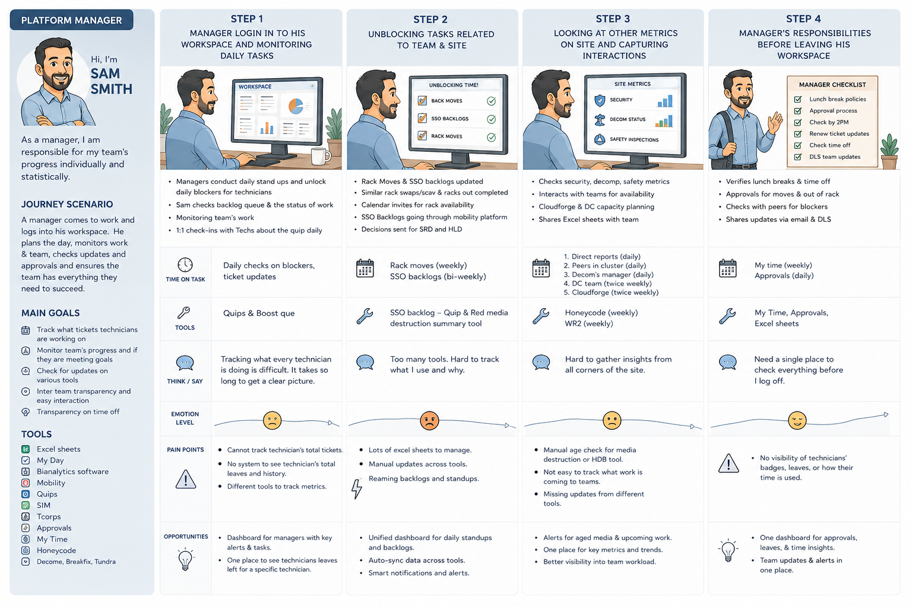
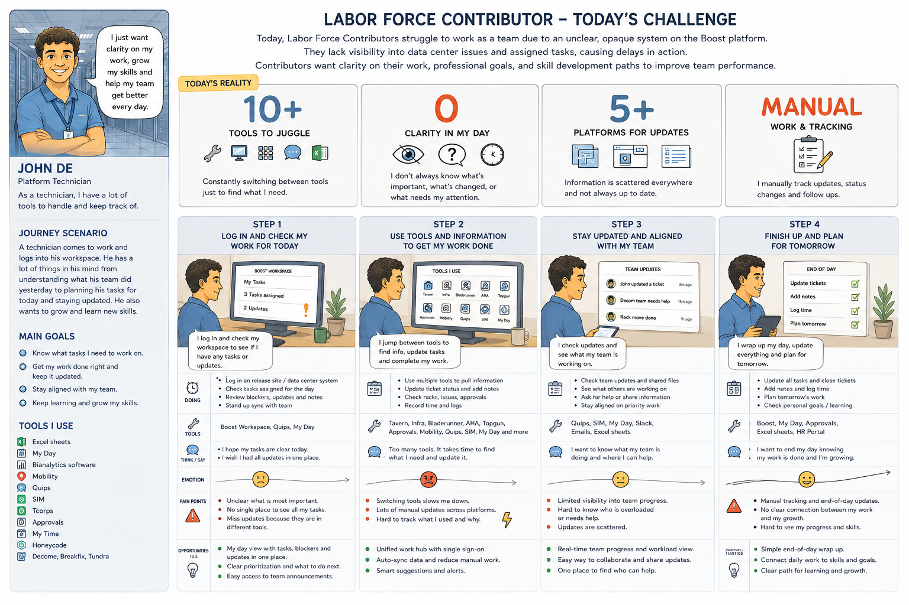
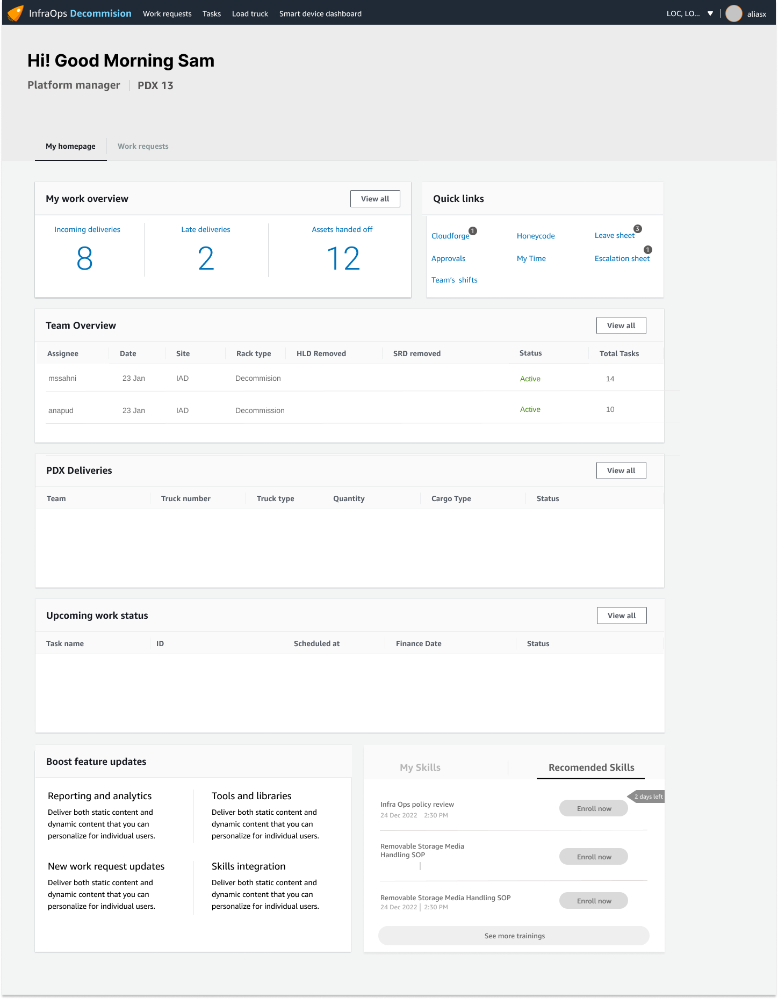

design opportunity 01
Amazon Web Services | 2022
Monitoring & Control
Designing a workforce management platform for data center teams, including journey mapping, dashboard UX, and tools for labor force managers and contributors.
The Problem - Labor Force Managers
7
and more work buckets to manage
10
and more tools & systems involved
0
Unified workforce views
10+ tool tabs opened
10+ tool tabs opened
0
Automation and manual work discovery & prioritization

Problem solution mapping
The Problem - Labor Force Contributor
10
Tools to navigate
0
Unified views of daily work
0
Team & growth visibility
0
Automation, Manual Work & status tracking

Problem solution mapping
design opportunity 01
Create a Personalized Work View
Give contributors a single personalized view of their day—showing assigned tasks, priorities, blockers, urgent issues, and upcoming work so they immediately know what to work on next.Design wireframes
